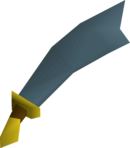
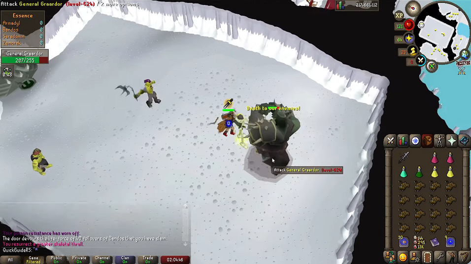
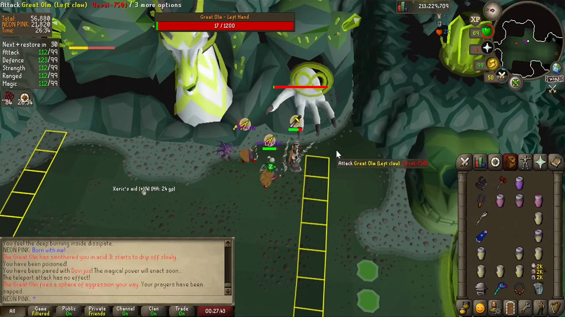

PLAYER VERSUS MONSTERS



PVM eli Player versus Monster on Runescapen suosituin tapa pelata. Tappamalla erilaisia monstereja saa droppeja, joista osa on arvokkaita. Niitä vaihetaan pelin sisäistä valuuttaa vastaan (GP). Jagex eli Runescapen kehittäjä ja ylläpitäjä päivittää lähinnä pelkästään PVM, joten PVP aikakausi alkaa olla lopussaan.

Runescapen legendaarisin kappale.